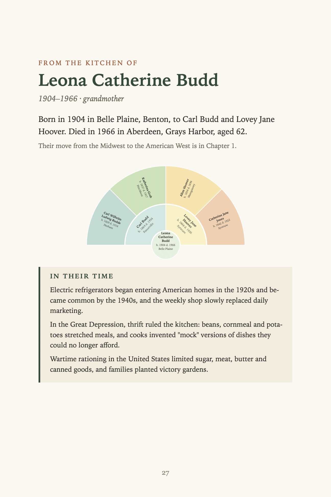
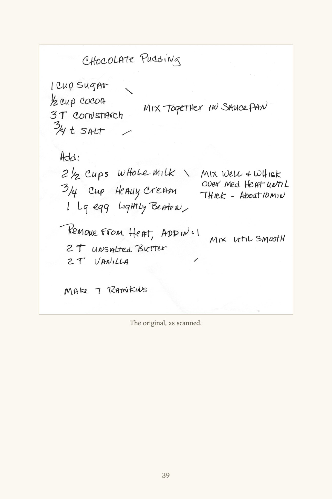
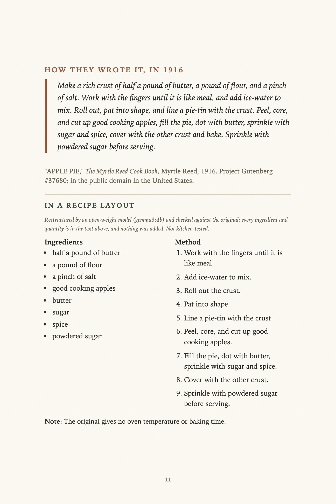
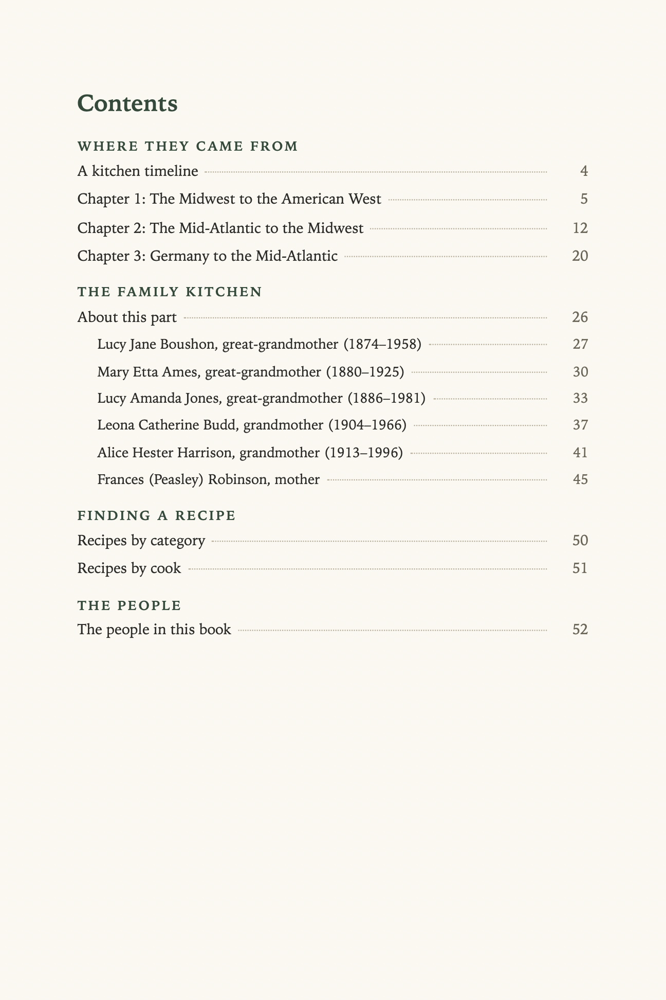

Scan your family's recipe cards, give it your WikiTree ID, and get a print-ready cookbook: each recipe filed under the relative who cooked it, beside who they were and what was happening in kitchens during their life.
The demo book, built from the author's own public WikiTree tree and one handwritten recipe card.
How it works
Read the treeAncestors, plus great-aunts and great-uncles, from WikiTree's public API. Living people are never included.
Scan the cardsAssign each scan to the person who cooked it. A local vision model drafts the transcription, you proofread it beside the scan, or print the scan itself as the page.
Get the bookA page per cook, recipes by category, a contents page with real page numbers, and the period version of the same dish from a public-domain cookbook.
What a page looks like

A cook's page: life facts from the tree, her parents and grandparents, and what was happening in kitchens in her time.

The original card, as scanned, after the transcription I proofread against it.

"How they wrote it": a public-domain cookbook's own wording, then the same receipt as ingredients and method.

Contents and indices with real page numbers.
It is powerful to see a handwritten family recipe and the information about that ancestor together on a page, in a book that can be handed down to nieces and nephews.
Why open models
Private. The scans never leave your computer; the vision model runs locally.
No per-book fee. Local inference costs electricity, not tokens.
Controlled. The model only writes about food. Code writes every fact about a person, and a guard rejects invented years, kin and names.
Built on Gemma 3, EmbeddingGemma, and Postgres with pgvector (tested on Tiger Cloud).
Honest limits
Chapter recipes are traditional dishes for the family's places and eras, not your family's, and not kitchen-tested.
Handwriting transcription is a draft: it misread ½ cup as 2 cups on a real card. Always proofread, or use the scan as the page.
WikiTree photos and recipes are gated on membership and permission, and the tool can only take your word on the Honor Code.